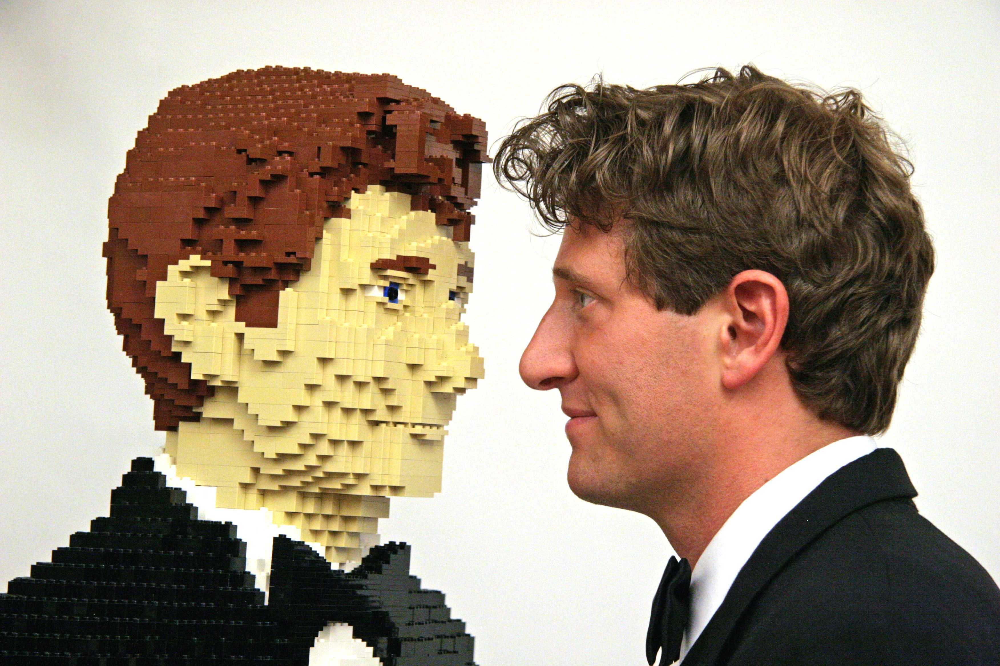

ABOUT NATHAN SAWAYA
Nathan Sawaya was born in Colville, Washington and raised in Veneta, Oregon. He attended New York University. Sawaya lives and works between his two studios located in New York City and Los Angeles.
Since his first solo exhibition, Sawaya's artwork has grabbed the attention of art critics and pop culture novices alike. His artwork has been shown in major art institutions throughout the world, and held in the collection of both prominent private and public collections.
Sawaya was the first contemporary artist to ever take LEGO® into the art world as a medium. His work is obsessively and painstakingly crafted and is both beautiful and playful. Sawaya’s ability to transform LEGO bricks into something new, his devotion to scale and color perfection, the way he conceptualizes the action of the subject matter, enables him to elevate an ordinary toy to the status of fine art. His unique sculptures and renowned touring exhibition, THE ART OF THE BRICK®, continues to inspire creativity as well as break attendance records globally.
Nathan Sawaya is the recipient of numerous awards and honors, recognizing his artwork and cultural achievements. In 2014, with the belief that "art is not optional," Sawaya founded The Art Revolution Foundation, for the purpose of making art a priority in our schools and our homes. He has been a speaker at Google Zeitgeist, TEDx, Yahoo! and at the Clinton Library.
"Sawaya is a surrealist mash-up of forms and artists. Imagine Frank Lloyd Wright crossed with Ray Harryhausen, or Auguste Rodin crossed with Shigeru Miyamoto, and you start to get a sense of where Sawaya is coming from.” - Journalist, Scott Jones.